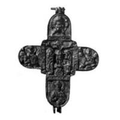
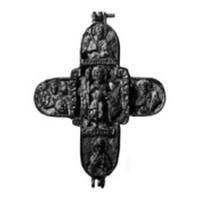

Catalog › CE-0417 · RUB-13
Encolpion bivalv din aramă, cat. 13, Muzeul „Andrei Rubliov”
a doua jumătate a sec. XIII – începutul sec. XIV (1251–1333) · loc necunoscut · Muzeul Central de Cultură și Artă Rusă Veche „Andrei Rubliov” (Центральный музей древнерусской культуры и искусства имени Андрея Рублёва), Moscova
double-sided reliquary cross (enkolpion), aramă; a doua jumătate a c. XIII – începutul sec. XIV (1251–1333); find spot unknown; kept at Muzeul Central de Cultură și Artă Rusă Veche „Andrei Rubliov” (Центральный музей древнерусской культуры и искусства имени Андрея Рублёва), Moscova.




Identificare
- Categorie
- Encolpion bivalv (relicvar)
- Material
- Aramă
- Tehnică
- Turnare în relief
- Dimensiuni
- Î 83 × L 62 × Gr 4 mm
Iconografie
- Avers
- Sf. Ioan; Sf. Nicolae
- Descriere avers
- În centru, Răstignirea cu Maica Domnului și apostolul Ioan Evanghelistul alături; la capetele brațului transversal, busturi de arhangheli, la capătul de jos sfântul ierarh Nicolae, la cel de sus Chipul Nefăcut de mână (Spas Nerukotvorny).
- Revers
- Sfinți militari
- Descriere revers
- Marele mucenic Teodor Stratilat, cu sulița și scutul. La capete, busturi de arhangheli, de sfânt războinic și de mucenic.
Datare și atribuire
- Datare
- a doua jumătate a sec. XIII – începutul sec. XIV (1251–1333)
- Centru
- Necunoscut
- Tipologie
- Răstignire / Teodor Stratilat (după titlul din sursă)
Descoperire
- Context
- Colecție (fără context)
- Coordonate
- 55.7487° N, 37.6701° E
- Precizia locului
- Loc de păstrare (loc de descoperire incert)
Păstrare și referințe
- Colecție
- Muzeul Central de Cultură și Artă Rusă Veche „Andrei Rubliov” (Центральный музей древнерусской культуры и искусства имени Андрея Рублёва), Moscova
- Bibliografie
- С. В. Гнутова, Е. Я. Зотова, Кресты, иконы, складни. Медное художественное литье XI — начала XX века из собрания Центрального музея древнерусской культуры и искусства имени Андрея Рублева : Альбом, Moscova, Интебрук-бизнес, 2000, 133 + 2 p. [Gnutova, Zotova 2000], cat. nr. 13, cu fotografia reprodusă la același număr. Text și imagini pe azbyka.ru: https://azbyka.ru/otechnik/ikona/kresty-ikony-skladni-mednoe-hudozhestvennoe-lite-11-nachala-20-veka-iz-sobranija-tsentralnogo-muzeja-drevnerusskoj-kultury-i-iskusstva-imeni-andreja-rubleva/2 (accesat 17.10.2026)
- Figura
- Gnutova, Zotova 2000, fotografia de la cat. 13
- Planșe
- Gnutova, Zotova 2000, secțiunea „Кресты”, cat. nr. 13 (pagina tipărită nu e dată în ediția online)
- Observații
- Locul descoperirii nu e cunoscut cu precizie; punctul de pe hartă marchează locul de păstrare (Muzeul Central de Cultură și Artă Rusă Veche „Andrei Rubliov”), nu locul descoperirii. Coordonate: nu sunt date în sursă.
Citare: Corpus Encolpiorum, CE-0417, Encolpion bivalv din aramă, cat. 13, Muzeul „Andrei Rubliov”, https://vitaliejosanu1979-ux.github.io/primul-meu-proiect/piese/RUB-13/ (accesat 2026-10-17).